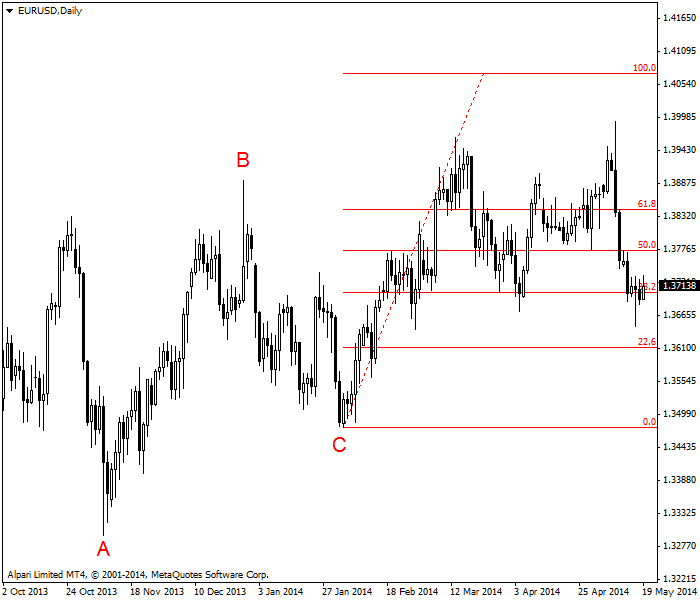
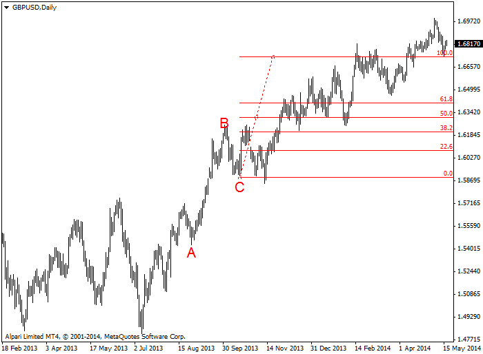
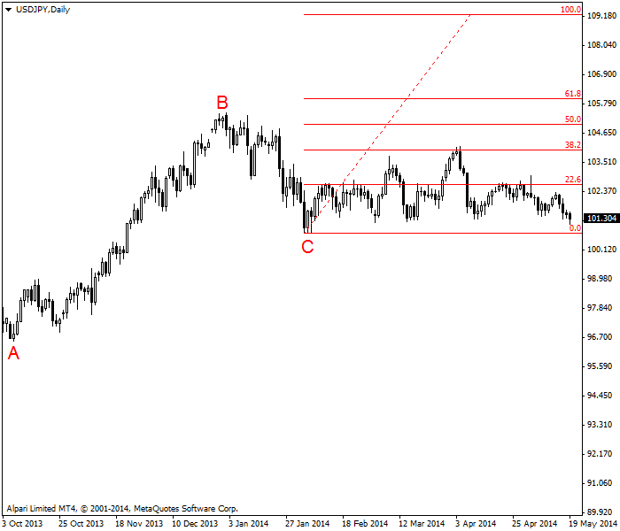
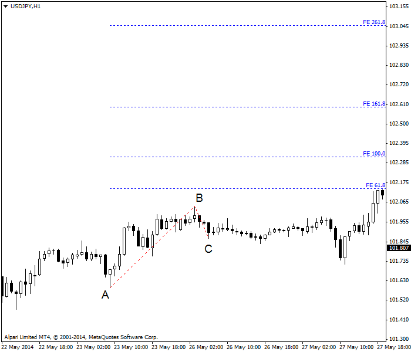

<!DOCTYPE html>
<html>
</html>
<head>
  <meta charset="utf-8">
  <meta http-equiv="X-UA-Compatible" content="IE=edge">
  <title>外汇站（fx-z.com） - 斐波那契扩展</title>
  <meta name="description" content="">
  <meta name="viewport" content="width=device-width, initial-scale=1">
  <meta name="robots" content="all,follow">
  <!-- Bootstrap CSS-->
  <link rel="stylesheet" href="vendor/bootstrap/css/bootstrap.min.css">
  <!-- Font Awesome CSS-->
  <link rel="stylesheet" href="vendor/font-awesome/css/font-awesome.min.css">
  <!-- Google fonts - Roboto-->
  <link rel="stylesheet" href="https://fonts.googleapis.com/css?family=Roboto:400,300,700,400italic">
  <!-- owl carousel-->
  <link rel="stylesheet" href="vendor/owl.carousel/assets/owl.carousel.css">
  <link rel="stylesheet" href="vendor/owl.carousel/assets/owl.theme.default.css">
  <!-- theme stylesheet-->
  <link rel="stylesheet" href="css/style.default.css" id="theme-stylesheet">
  <!-- Custom stylesheet - for your changes-->
  <link rel="stylesheet" href="css/custom.css">
  <!-- Favicon-->
  <link rel="shortcut icon" href="img/favicon.png">
  <!-- Tweaks for older IEs--><!--[if lt IE 9]>
    <script src="https://oss.maxcdn.com/html5shiv/3.7.3/html5shiv.min.js"></script>
    <script src="https://oss.maxcdn.com/respond/1.4.2/respond.min.js"></script><![endif]-->
</head>
<body>
  <div id="all">
    <div class="container-fluid">
      <div class="row row-offcanvas row-offcanvas-left"> 
        <!--   *** SIDEBAR ***-->
        <div id="sidebar" class="col-md-4 col-lg-3 sidebar-offcanvas">
          <div class="sidebar-content">
            <h1 class="sidebar-heading"> <a href="https://fx-z.com">fx-z.com</a></h1>
            <p class="sidebar-p">介绍外汇相关的基本知识，告诉您如何进行自己的技术面和基本面分析，讲解先进的交易理念，并且为您阐述失败交易者与专业交易者之间的真正区别。 </p>
            <p class="sidebar-p">通过这些课程的学习，您将学会如何根据自己的优势来应用情绪分析，还将了解真实世界的事件会对货币汇率产生什么影响，央行在外汇市场中所发挥的作用，以及交易者在颇受欢迎的即期外汇交易中有哪些选择方案。 </p>
            <ul class="sidebar-menu">
                <!-- Link-->
                <li class="sidebar-item"><a href="https://fx-z.com" class="sidebar-link">首页</a></li>
                <!-- Link-->
                <li class="sidebar-item"><a href="cihui.html" class="sidebar-link">外汇词汇</a></li>
                <!-- Link-->
                <li class="sidebar-item"><a href="ebook.html" class="sidebar-link">获取外汇电子书</a></li>
            </ul>
            <p class="social"><a href="https://www.cn-forextime.com/zh?partner_id=4920383" target="_blank"data-animate-hover="pulse" class="external facebook"><i class="fa fa-eur"></i></a><a href="https://www.cn-forextime.com/zh?partner_id=4920383" target="_blank" data-animate-hover="pulse" class="external gplus"><i class="fa fa-gbp"></i></a><a href="https://www.cn-forextime.com/zh?partner_id=4920383" target="_blank" data-animate-hover="pulse" class="external twitter"><i class="fa fa-rmb"></i></a><a href="https://www.cn-forextime.com/zh?partner_id=4920383" target="_blank" title="" class="external instagram"><i class="fa fa-dollar"></i></a><a href="https://www.cn-forextime.com/zh?partner_id=4920383" target="_blank" data-animate-hover="pulse" class="email"><i class="fa fa-money"></i></a></p>
            <div class="copyright text-center text-md-left">
             
              
            </div>
          </div>
        </div>
        <!--   *** SIDEBAR END ***  -->
        <!--   *** DETAIL ***-->
        <div class="col-md-8 col-lg-9 content-column white-background">
          <div class="small-navbar d-flex d-md-none">
            <button type="button" data-toggle="offcanvas" class="btn btn-outline-primary"> <i class="fa fa-align-left mr-2"></i>菜单</button>
            <h1 class="small-navbar-heading"> <a href="https://fx-z.com/8-1.html">下一篇 </a></h1>
          </div>
          <div class="row">
            <div class="col-xl-10">
              <div class="content-column-content">
                <h1>斐波那契扩展</h1>
       <p>
    为了掌握斐波那契扩展，您首先需要了解斐波纳契序列、关键斐波纳契比率，以及关于金融市场价格按照这些数字波动的普遍（如果无根据）观念。请参阅斐波那契回调课程以了解相关信息。
</p>
<p>
    正如回调被假设为结束于斐波那契数所在位置或位置附近，斐波纳契扩展的核心假设为，当趋势恢复时，价格走势将达到斐波那契数字处。该理念表示，正如您可以用斐波那契数作为止损位一样，您可以用斐波那契扩展线作为价格目标位。扩展也被称为“预估”，意味着扩展试图判定未来的支撑位或阻力位。
</p>
<p>
    默认数值水平为 0.0%，23.6%，38.2%，50.0%，61.8%，100.0%， 161.8%，261.8% 和 423.6%。如前一节课程所述，50% 和 100% 并非斐波那契数，但对寻求形态的人类大脑而言有着明显的吸引力，并被 W.D. Gann 作为关键数字所采用。
</p>
<p>
    请参见以下示例图。A 点表示低点，B 点表示回调前的高点。如果我们假设回调只是暂时性的，并将重新绕回上行走势，我们想知道它能持续多远。用 B 点价格减去 A 点价格，用 C 点的低点价格乘以不同的斐波那契数比率，然后取两者的比例值。50% 数值线代表 A 点至 B 点的走势中，有 50% 被应用于 C。
</p>
<p>
      每日图斐波那契扩展线
</p>
<p>
    下图为更标准的斐波那契扩展线。同样，C 点之后显示的比率基于 A 点至 B 点的价格走势。货币（恰好为英镑）越过 100% 预估值，然后继续到达 161.8%。
</p>
<p>
     每日图斐波那契扩展线
</p>
<p>
    针对斐波那契预估的一项批判是其起点和终点（A 点和 B 点）的选择具有主观性。请注意，在上图中，设定 C 点后，我们得到的低点逐渐走低。这会导致 C 点的选择失效吗？实际上，这区别不大。
</p>
<p>
    更大的批判在于，外汇市场趋势由于真实世界的原因而发生变化。参见下图。图中的货币对为 USD/JPY。由于地缘政治事件（导致风险厌恶情绪上升）的发生、人们对日本经济的态度发生改变以及其他已知发展动态，该货币对停止了上行走势。USD/JPY 一度到达 38% 预估位，但之后陷入了横盘区间交易模式。而这个正是最大的问题——外汇行情中确实会出现走势失控的情况，此时，斐波那契预估可能有用，但我们也可能回归均值和区间震荡交易。你永远无法事先预知未来的情况。由于这些缺点的存在，斐波那契预估的用处有限。
</p>
<p>
     经过证实，斐波那契扩展对 USD/JPY 每日图的用处不大。
</p>
<p>
    那么，斐波那契预估值对即日图的用处大不大呢？请查看以下基于每小时时间周期的 USD/JPY 图。A 点和 B 点由黑色水平线标出。蓝色预估线为 C 点之后的走势。此图显示 61.8% 为第一条预估线，而且截止数据结束，价格始终未能触及该预估线。换言之，按照理论，货币价格应在离开 C 点后到达 61.8%，但实际上，它在结束前都未能触及该目标位。
</p>
<p>
     斐波那契扩展线不适用于 USD/JPY 每小时图表
</p>
<p>
    斐波那契预估与可测移动（measured move）的区别是什么呢？在人们使用斐波那契数来捕捉市场想象之前，人们使用另一项老派术语——可测移动。可测移动假设，若回落后出现上涨，那么该上涨的增量比例与原始上涨的比例相同。总而言之，其斜率（动量）也大致相同。如今，分析师称可测移动增加 38% 和 62%，并沿用过去的 100%，以此来预计增量大小。因此，我们可以将斐波那契预估视为可测移动的分支。
</p>
<p>
    <br/>
</p>
<p>
    <br/>
</p>
              </div>
            </div>
          </div>
        </div>
      </div>
    </div>
  </div>
  <!-- JavaScript files-->
  <script src="vendor/jquery/jquery.min.js"></script>
  <script src="vendor/popper.js/umd/popper.min.js"> </script>
  <script src="vendor/bootstrap/js/bootstrap.min.js"></script>
  <script src="vendor/jquery.cookie/jquery.cookie.js"> </script>
  <script src="vendor/owl.carousel/owl.carousel.min.js"></script>
  <script src="vendor/masonry-layout/masonry.pkgd.min.js"></script>
  <script src="js/front.js"></script>
</body>